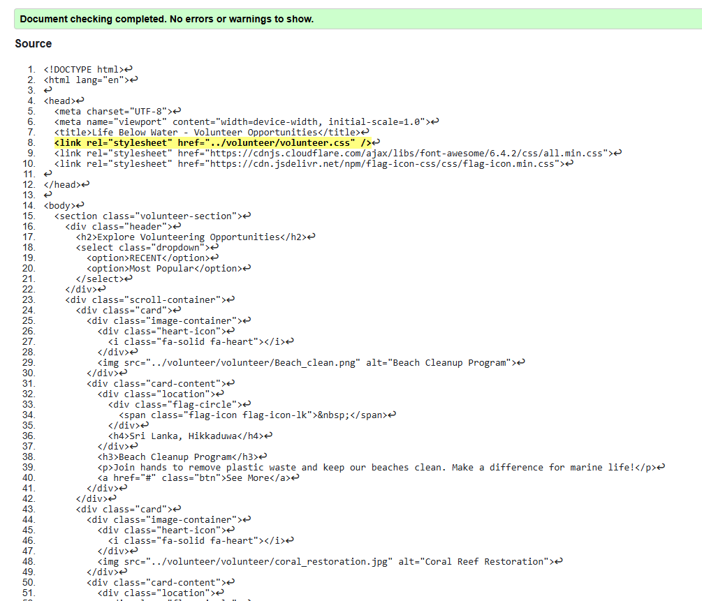

Splash Page validation report
The splash screen is an introduction feature of our project, which is a visually appealing and informative initial impression.
It has an underwater backdrop that is aligned with the subject matter of marine conservation, together with the United Nations
and Sustainable Development Goals logos, thereby showcasing the global significance of the issue. The brief message outlines
the objective of the project, mentioning the importance of conserving marine ecosystems and advocating for sustainable
conservation behaviors.
This page is utilized to capture the users' attention right away, so they know the purpose of the website before moving ahead.
By providing a simple message and a minimal design, the splash screen allows a smooth transition to the core content without
diverting the users' interest.
Back to Page Editor page
Volunteer Page validation report
This volunteer page showcases various opportunities to help protect marine life and the environment. Users can explore different programs, such as beach cleanups, coral reef restoration, sea turtle conservation, and marine awareness campaigns, by scrolling through the interactive cards. The page also features recent reviews from past volunteers, highlighting their experiences. A rating section provides an overall score based on feedback. Additionally, users can submit their own reviews, sharing their thoughts and ratings to encourage others to get involved.
Back to Page Editor page
Content Page validation report
This content page highlights the issue of ocean pollution, focusing on problems like plastic waste, oil spills, and chemical
contamination. The large background image makes the issue feel real and urgent, while the bold heading, "Our Oceans Are Drowning
in Pollution!", grabs attention. A "Read More" button encourages visitors to learn more about the causes and effects of pollution,
helping them understand the importance of protecting marine life.
The page is designed for easy navigation, with clear sections such as Causes and Effects, Solutions, and A Visual Insight
into the Current Status of Our Oceans. There is also a "Go to Top" button, shown as an arrow inside a circle, allowing users
to quickly return to the top of the page. This makes scrolling through the content more convenient. Overall, the page uses visuals
and simple navigation to spread awareness about ocean pollution and encourage action.